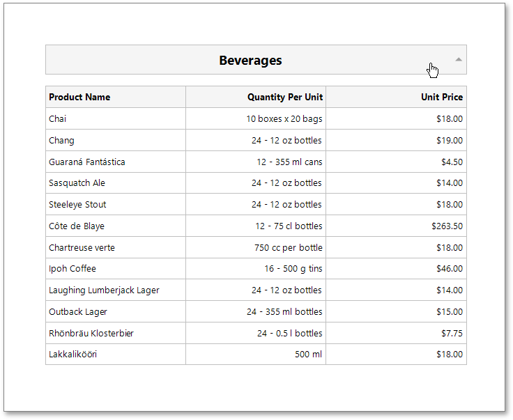

Sort a Report in Print Preview
This tutorial illustrates how to enable sorting report data in Print Preview.

In this tutorial, we will start with the following report displaying products grouped by category names.

You can implement interactive sorting for both the detail data and report groups.
Sort Report Groups
To enable sorting report groups in Print Preview, select the label displaying product category names located in the Group Header band and switch to the Properties panel.

Expand the Behavior category, select the Interactive Sorting section, and set the Target Band property to GroupHeader1. Set the Field Name property to CategoryName.
Switch to the Preview tab to sort report groups by the CategoryName field. When a mouse pointer hovers over the category name, it changes to a hand indicating the sorting capability. The arrow displayed at the element's right edge indicates the sorting order.
Sort Detail Data
To enable sorting data in the Detail band, select the table cell displaying the Product Name title and switch to the Properties panel.
Set the Target Band property to Detail and expand the Sort Fields section and add a new sort field to sort detail data by the product name. Set the table cell's Field Name property to the ProductName field.
On switching to the Preview tab, you can now sort data in the Detail band by the ProductName field.

If you provide interactive sorting to multiple fields, clicking another field clears all the previously applied data sorting. Hold the SHIFT key while clicking to preserve the existing sorting settings and thus sort against multiple fields.
To disable data sorting against a specific field, hold the CTRL key on its caption click.
Note
Reports embedded into the current report using the Subreport control do not support interactive data sorting.